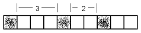
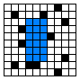
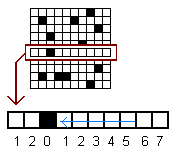
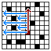
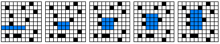
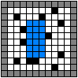
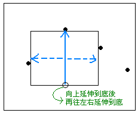
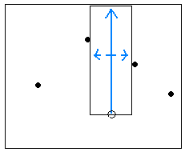
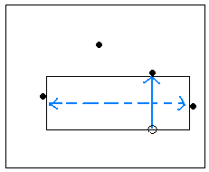
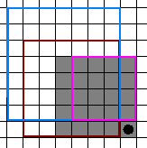

Largest Empty Interval
程度★ 難度★★
問題描述（離散版本）
一條陣列，有些格子已被放上障礙物。最長的、連續的空白格子在哪裡？
Recurrence
length(i) =
{ 0 , if i < 0 [Exterior]
{ 0 , if i = 0 and array[i] = 0 [Initial]
{ 1 , if i = 0 and array[i] = 1 [Initial]
{ 0 , if i > 0 and array[i] = 0 [Compute]
{ length(i-1) + 1 , if i > 0 and array[i] = 1 [Compute]
length(i)：以第i格作為最右端的連續空白的長度。
array[i]：障礙物為0，空白為1。
複雜度
時間複雜度為O(N)，空間複雜度為O(N)，N為陣列長度。
如果只想計算一個特定問題的答案，那麼空間複雜度可以精簡成O(1)，這個部份就不多提了，交給各位來處理。
程式碼：求出最長空白的長度
程式碼：求出最長空白的長度
為了讓程式碼更清爽，這裡把array[]、length[]裡面的數值都往右移動一格，如此就可以省略掉第零格的判斷式，也避免了length[]會溢出邊界。
為了讓程式碼更清爽，這裡也把length[]都初始化為0，如此就不必特別處理array[i] == 0的情況了，相當巧妙。
這兩個技巧是經常使用的的實作技巧，不僅簡化了程式碼的結構，也增加了程式的效率。一定要學會！
程式碼：求出最長空白的位置
求出最長空白的長度之後，在最後加上一段程式碼就可以了。當然可以再改進，就交給各位了。
程式碼：求出其中一個最長空白的位置
也有人會一邊計算表格，一邊紀錄最大值。這種寫法也是很好的，不過只能求出其中一個最長空白的位置。
如果只需要求出隨便一種最長空白的位置，那麼這種寫法就非常適合。
Largest Empty Rectangle
程度★ 難度★★
問題描述（離散版本）
一張方格紙，有許多格子填上了黑色。請找出不包含黑格子的矩形，並且令矩形面積盡量大。
矩形的頂點，可以直接想做是一整個格子，而不是想做直線與橫線的交叉點。
UVa 10074 10502 10667
如果使用窮舉法
最簡單的方法就是用窮舉法。矩形共有四個頂點，只要窮舉所有可能的頂點位置，就可以找出答案來。紙的長寬為H和W的話，共有H*W個位置可以放上頂點；要窮舉所有矩形，時間複雜度就是O((H*W)^4)。另外還要確定矩形內部有沒有包含黑格子，時間複雜度就變成了O((H*W)^5)。
要確定一個矩形的大小和位置，其實只要對角線的兩個頂點就夠了；要窮舉所有矩形，時間複雜度是O((H*W)^2)。確定矩形內部有沒有包含黑格子，就是O((H*W)^3)。
要確定一個矩形的大小和位置，也可以利用矩形左上角的頂點、長、寬；要窮舉所有矩形，時間複雜度是O((H*W)^2)。確定矩形內部有沒有包含黑格子，就是O((H*W)^3)。
談了一堆簡單的做法後，接著來試試Dynamic Programming吧！
嘗試切成條狀，Divide and Conquer
因為原來的紙張又大又複雜，計算面積非常麻煩，所以我們可以試著把紙張切成小塊小塊，逐一處理。這裡將紙張切成橫條狀（這個想法跟積分運算的道理是相同的），並套用上一篇文章所提到的Largest Empty Interval來計算每一條橫條的面積；接著將所有橫條合併起來，便能求出總面積。
將紙張切成橫條狀，此即Divide；每個橫條用Largest Empty Interval來計算面積，此即Conquer；將所有橫條合併，此即Merge。接著來看看要怎麼找出Largest Empty Rectangle吧！
演算法
首先將紙張切成橫條狀，針對每一橫條，找出其中每個點往左可延伸的長度，即是在尋找Largest Empty Interval。
對紙張上的每個位置，都嘗試作為矩形右下角的頂點位置（窮舉所有矩形右下角的位置）。固定矩形右下角的頂點後，觀察該處以上的每個橫條（窮舉所有矩形高度），往左可延伸的長度，便可以求得最大矩形面積。
 程式碼
為了讓邊界計算不會溢位，於是將紙張的外面多圍一圈。這是實作二維地圖時很常用的方法。
程式碼
先設計出計算一個橫條的程式碼──計算Largest Empty Interval，運用了DP。（這段程式碼在計算width時，每一格都會覆蓋掉而不受舊值影響，故重算時不必重新初始化。）
補足程式碼，計算所有橫條。
程式碼
對紙張上的每個位置，都嘗試作為矩形右下角的頂點位置。固定矩形右下角的頂點後，觀察該處以上的每個橫條，往左可延伸的長度，便可以求得最大矩形面積。
先設計出計算一個位置的程式碼。
判斷矩形太窄的情形。
補足程式碼，窮舉紙張上所有位置。
複雜度
時間複雜度分析：首先計算了每個橫條的Largest Empty Interval，接著窮舉矩形的右下角頂點位置，又窮舉了矩形的各種高度，算出最大矩形面積。時間複雜度是O((H*W)*H)。
空間複雜度分析：儲存全部問題的答案，空間複雜度是O(H*W)。只想計算一個特定問題的答案，空間複雜度當然可以精簡，這裡就不多提了。
計算的方向是可以改變的。可以改為切直條，可以改為窮舉矩形右上角頂點，道理都一樣。
Largest Empty Rectangle
程度★ 難度★★★
更好的方法
前面介紹的方法用了很多窮舉，也重複計算了很多地方。所以，還可以更快。
這個方法是窮舉紙張上每一個位置，每個位置都去計算以該點為長方形底部，往上延伸到底後，再往左右延伸到底的面積。
如果窮舉一個橫條上的所有位置，便可以得到以該橫條為長方形底部的Largest Empty Rectangle。
 所以，只要窮舉紙張上每個位置，就可以算出Largest Empty Rectangle了。
討論
之前只將長方形往左延伸，故要窮舉所有高度。現在改為同時往左右延伸，由於這種延伸方式可得到最大的矩形，便不必窮舉所有高度。
時間複雜度
時間複雜度是O(H*W)。
程式碼：Largest Empty Rectangle的面積
計算過程滿繁複的。大抵上和上一篇的方式差不多，我有點懶的說明，所以直接給程式碼吧。（懶散是不好的行為，請勿模仿。）
程式碼：Largest Empty Rectangle的位置
每當產生最大值之後，就看看此時長方形往上、往左、往右可延伸的距離，就能推敲出最大的長方形的位置。不過這種方式只能找出其中一個長方形的位置。
【待補程式碼】
Largest Empty Rectangle
程度★ 難度★★★
最好的方法
最簡潔的做法，是利用stack，宛如判斷括號對稱一般，將長方形的左右兩邊線找出來。特別要小心的地方，是當stack的元素全部彈出之後，之後出現的右邊線還是有用處的，不能把它想做是孤單的右括號。時間複雜度是O(H*W)。
1. 切成直條。預先用DP計算每一條直線的Empty Interval高度。 2. 窮舉每一個橫條，作為長方形的底線，並利用stack算出最大矩形。
演練其中一段過程：
1.
好啦，就拿這筆測資來說明吧XD。
0000000000000000
0000011111000000
0011111111100000
0111111111110000
1111111111110000
1111111111111111
0000000000000000
2.
首先呢，請先用DP求出每一縱列的重複次數。
0000000000000000
0000011111000000
0011122222100000
0122233333210000
1233344444320000
2344455555431111
0000000000000000
3.
接下來，讓我們用堆疊來輔助計算。
先引入一個結論，堆疊中的值「從下到上」必須是遞增的。
此外，為了方便起見，我們直接從倒數第二行開始執行。
0000000000000000
0000011111000000 +-------------+
0011122222100000 | |
0122233333210000 +-------------+
1233344444320000 | |
-> 2344455555431111 +-------------+
0000000000000000 | |
+-------------+
| |
+-------------+
| |
ESP-> +-------------+
4-1.
首先碰到的第一個高度是「高度2」，把它放入堆疊。
0000000000000000
0000011111000000 +-------------+
0011122222100000 | |
0122233333210000 +-------------+
^233344444320000 | |
^344455555431111 +-------------+
0000000000000000 | |
+-------------+
| |
ESP-> +-------------+
| 高度2 位置1 |
+-------------+
4-2.
碰到「高度3」，「高度3」 > 「高度2」，因此把「高度3」放入堆疊。
0000000000000000
0000011111000000 +-------------+
0011122222100000 | |
0^22233333210000 +-------------+
1^33344444320000 | |
2^44455555431111 +-------------+
0000000000000000 | |
ESP-> +-------------+
| 高度3 位置2 |
+-------------+
| 高度2 位置1 |
+-------------+
4-3.
0000000000000000
0000011111000000 +-------------+
00^1122222100000 | |
01^2233333210000 +-------------+
12^3344444320000 | |
23^4455555431111 ESP-> +-------------+
0000000000000000 | 高度4 位置3 |
+-------------+
| 高度3 位置2 |
+-------------+
| 高度2 位置1 |
+-------------+
4-4.
0000000000000000
0000011111000000 +-------------+
001^122222100000 | |
012^233333210000 +-------------+
123^344444320000 | |
234^455555431111 ESP-> +-------------+
0000000000000000 | 高度4 位置3 |
+-------------+
| 高度3 位置2 |
+-------------+
| 高度2 位置1 |
+-------------+
4-5.
0000000000000000
0000011111000000 +-------------+
0011^22222100000 | |
0122^33333210000 +-------------+
1233^44444320000 | |
2344^55555431111 ESP-> +-------------+
0000000000000000 | 高度4 位置3 |
+-------------+
| 高度3 位置2 |
+-------------+
| 高度2 位置1 |
+-------------+
4-6.
唷呵，又碰到一個比「高度4」大的了，把「高度5」放入堆疊吧！
0000000000000000
00000^1111000000 +-------------+
00111^2222100000 | |
01222^3333210000 ESP-> +-------------+
12333^4444320000 | 高度5 位置6 |
23444^5555431111 +-------------+
0000000000000000 | 高度4 位置3 |
+-------------+
| 高度3 位置2 |
+-------------+
| 高度2 位置1 |
+-------------+
4-7.
0000000000000000
000001^111000000 +-------------+
001112^222100000 | |
012223^333210000 ESP-> +-------------+
123334^444320000 | 高度5 位置6 |
234445^555431111 +-------------+
0000000000000000 | 高度4 位置3 |
+-------------+
| 高度3 位置2 |
+-------------+
| 高度2 位置1 |
+-------------+
4-8.
0000000000000000
0000011^11000000 +-------------+
0011122^22100000 | |
0122233^33210000 ESP-> +-------------+
1233344^44320000 | 高度5 位置6 |
2344455^55431111 +-------------+
0000000000000000 | 高度4 位置3 |
+-------------+
| 高度3 位置2 |
+-------------+
| 高度2 位置1 |
+-------------+
4-9.
0000000000000000
00000111^1000000 +-------------+
00111222^2100000 | |
01222333^3210000 ESP-> +-------------+
12333444^4320000 | 高度5 位置6 |
23444555^5431111 +-------------+
0000000000000000 | 高度4 位置3 |
+-------------+
| 高度3 位置2 |
+-------------+
| 高度2 位置1 |
+-------------+
4-10.
0000000000000000
000001111^000000 +-------------+
001112222^100000 | |
012223333^210000 ESP-> +-------------+
123334444^320000 | 高度5 位置6 |
234445555^431111 +-------------+
0000000000000000 | 高度4 位置3 |
+-------------+
| 高度3 位置2 |
+-------------+
| 高度2 位置1 |
+-------------+
4-11.
咦？現在碰到的「高度4」比堆疊頂的「高度5」小了。
換句話說，高度是5的矩形已經到了「盡頭」。
把「高度5」給pop出來順便計算面積吧！
area = 高度5 * (位置11 - 位置6) = 25
0000000000000000 高度5 位置6
00000#####000000 +-------------+
00111#####^00000 | |
01222#####^10000 +-------------+
12333#####^20000 | |
23444#####^31111 ESP-> +-------------+
0000000000000000 | 高度4 位置3 |
+-------------+
| 高度3 位置2 |
+-------------+
| 高度2 位置1 |
+-------------+
4-12.
啊哈！又碰到一個比堆疊頂的小的了！
pop出來並計算面積吧！
area = 高度4 * (位置12 - 位置3) = 36
0000000000000000 高度4 位置3
0000011111000000 +-------------+
00#########00000 | |
01#########^0000 +-------------+
12#########^0000 | |
23#########^1111 +-------------+
0000000000000000 | |
ESP-> +-------------+
| 高度3 位置2 |
+-------------+
| 高度2 位置1 |
+-------------+
4-13-1.
再度碰到一個比堆疊頂的小的了！
area = 高度3 * (位置13 - 位置2) = 33
0000000000000000 高度3 位置2
0000011111000000 +-------------+
0011122222100000 | |
0###########0000 +-------------+
1###########0000 | |
2###########^111 +-------------+
0000000000000000 | |
+-------------+
| |
ESP-> +-------------+
| 高度2 位置1 |
+-------------+
4-13-2.
目前「高度1」還是比堆疊頂的「高度2」小，
所以還要把「高度1」pop出來！
area = 高度2 * (位置13 - 位置1) = 24
0000000000000000 高度2 位置1
0000011111000000 +-------------+
0011122222100000 | |
0122233333210000 +-------------+
############0000 | |
############^111 +-------------+
0000000000000000 | |
+-------------+
| |
+-------------+
| |
ESP-> +-------------+
4-13-3.
嗯，所以呢？
你是不是忘了要把「高度1」放入堆疊啊XDDDDDD
堆疊現在是空的呀（或者說，「高度1」比目前堆疊頂還大？）
0000000000000000
0000011111000000 +-------------+
0011122222100000 | | 啊啊 這裡要特別
0122233333210000 +-------------+ 注意一下，因為我
1233344444320000 | | 們在判斷 pop的時
234445555543^111 +-------------+ 候都是 堆疊頂>目
0000000000000000 | | 前高度，所以最後
+-------------+ 再push進去的位置
| | 要是「最後一個p-
ESP-> +-------------+ op出來的位置。」
| 高度1 (位置1)|
+-------------+
4-14.
0000000000000000
0000011111000000 +-------------+
0011122222100000 | |
0122233333210000 +-------------+
1233344444320000 | |
2344455555431^11 +-------------+
0000000000000000 | |
+-------------+
| |
ESP-> +-------------+
| 高度1 位置1 |
+-------------+
4-15.
0000000000000000
0000011111000000 +-------------+
0011122222100000 | |
0122233333210000 +-------------+
1233344444320000 | |
23444555554311^1 +-------------+
0000000000000000 | |
+-------------+
| |
ESP-> +-------------+
| 高度1 位置1 |
+-------------+
4-16.
呼！終於走到底了！
0000000000000000
0000011111000000 +-------------+
0011122222100000 | |
0122233333210000 +-------------+
1233344444320000 | |
234445555543111^ +-------------+
0000000000000000 | |
+-------------+
| |
ESP-> +-------------+
| 高度1 位置1 |
+-------------+
5.
最後呀，記得把stack當中的全部pop出來喔！
area = 高度1 * (位置17 - 位置1) = 16
0000000000000000 高度1 位置1
0000011111000000 +-------------+
0011122222100000 | |
0122233333210000 +-------------+
1233344444320000 | |
################ +-------------+
0000000000000000 | |
+-------------+
| |
+-------------+
| |
ESP-> +-------------+
Largest Empty Square
程度★ 難度★★
問題描述（離散版本）
跟Largest Empty Rectangle類似，只是改為找正方形而已。
Recurrence
area(i, j) =
{ 0 , if i < 0 or j < 0 [Exterior]
{
{ min( , if i >= 0 and j >= 0 [Compute]
{ area(i-1, j), and (i, j) is empty
{ area(i, j-1),
{ area(i-1, j-1)
{ ) + 1
{
{ 0 , if i >= 0 and j >= 0 [Compute]
{ and (i, j) is blocked
area(i, j)：右下角頂點為(i, j)的最大正方形的面積。
重點在於：
area(i, j) = min( area(i-1, j), area(i, j-1), area(i-1, j-1) ) + 1
複雜度
時間複雜度為O(H*W)，空間複雜度為O(min(H, W))。
程式碼
UVa 10908
Longest Plateau
程度★ 難度★★
在一個排序過的數列中，相同的數字會連續出現。找出連續最多次的次數。一串連續相同的數字稱作一個plateau，而這個問題也就是要找出最長的plateau。
這個問題跟Longest Empty Interval有點像，不過這個問題卻有一個精妙的解法，不需要用到Dynamic Programming。這讓我們多了一種思考問題的方式。